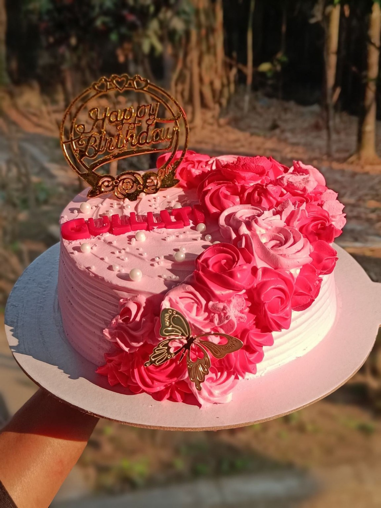
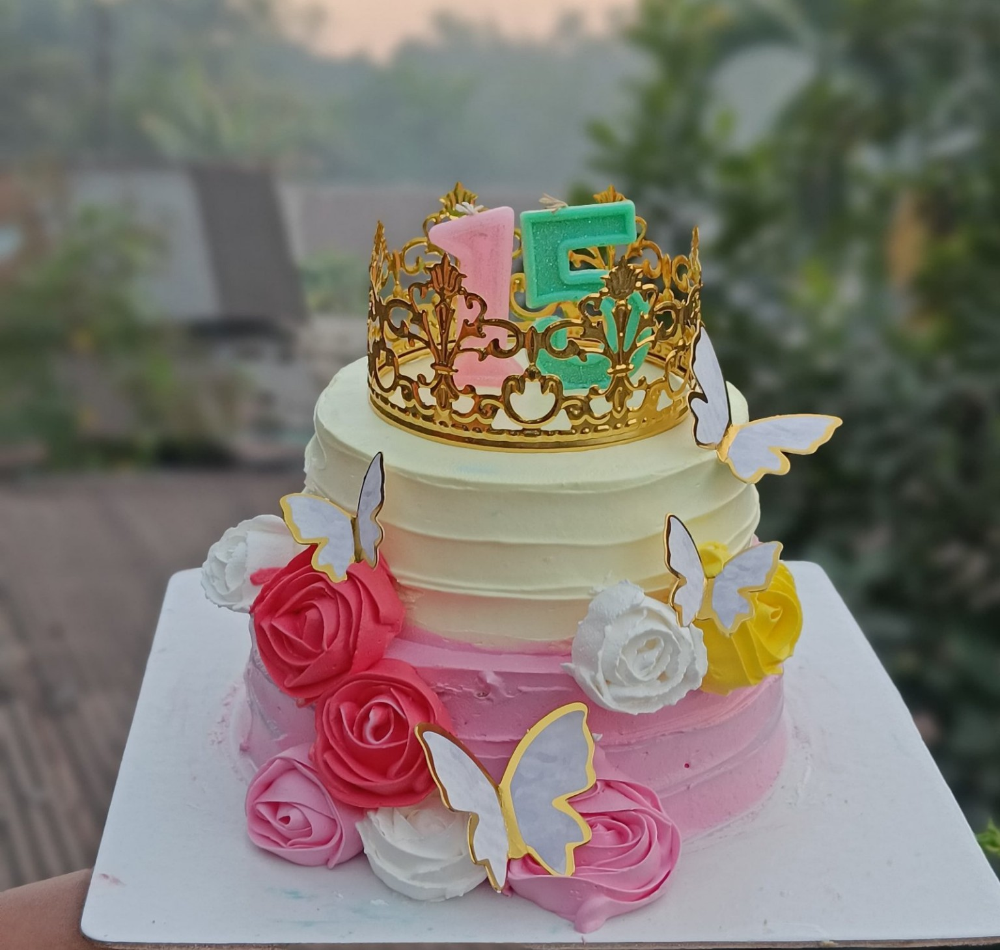

📸 Our Cake Gallery
Here are some beautiful cakes from our collection. 🎂💕



💕 Beautiful Cakes, Sweet Memories
Every cake has its own special story. Thank you for visiting Tasnu's sweet slice cake!
Welcome to Tasnu's sweet slice cake — a little place for everyone who loves delicious homemade cakes!
Homemade cake is a delicious treat prepared with simple ingredients and lots of love. Unlike many store-bought cakes, making a cake at home allows you to choose your favorite flavors, toppings and decorations.
Baking at home can be a fun and creative activity. You can make a simple vanilla cake for tea time, a chocolate cake for a celebration, or a beautiful decorated cake for a birthday.
The special thing about homemade cake is the feeling behind it. A homemade cake can make birthdays, family gatherings and ordinary days feel more special.
At Tasnu's sweet slice cake, we believe that every slice should be made with creativity, happiness and love. 🎂💕
Mix flour, cocoa powder, sugar, eggs, milk, oil and baking powder. Bake until the cake is cooked through. Finish with chocolate frosting.
Combine flour, sugar, eggs, milk, butter, vanilla and baking powder. Bake until golden and fluffy. Add vanilla cream on top.
Prepare a soft cocoa-flavored cake with a little red food coloring. Layer it with cream cheese or vanilla frosting.
Add fresh lemon juice and lemon zest to a basic cake mixture. Bake and decorate with a light lemon glaze.
Add mango puree to vanilla cake batter. Bake and decorate with mango-flavored cream and fresh mango pieces.
Prepare a soft vanilla cake and layer it with whipped cream and fresh strawberries.
Add shredded coconut and coconut milk to the cake mixture. Bake and decorate with coconut flakes.
Add coffee powder to a simple cake batter. Bake and cover with coffee-flavored cream for a delicious coffee taste.
Make a vanilla cake and add crushed chocolate cookies between the layers. Cover the cake with cream and cookie crumbs.
Bake a simple vanilla cake, cover it with colorful frosting and decorate it with fun sprinkles.
When you make cake at home, you can choose the ingredients yourself and adjust the recipe according to your preferences.
Homemade cakes can be a wonderful way to share something made with care with family and friends.
Baking allows you to experiment with flavors, decorations, shapes and designs.
Baking together can be a fun family activity and a great way to create happy memories.
A freshly baked cake can be a delicious treat to enjoy during celebrations or with a cup of tea or coffee.
Remember: Cake is a treat, so enjoying it as part of a varied and balanced diet is a good approach.
Welcome to everyone visiting Tasnu's sweet slice cake!
Greetings to all our lovely viewers from Sylhet and around the world. Thank you for visiting our homemade cake website. 💕
May every cake you bake bring happiness, sweetness and beautiful memories. 🧁💗
Here are some beautiful cakes from our collection. 🎂💕


Every cake has its own special story. Thank you for visiting Tasnu's sweet slice cake!